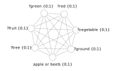

Exploring vagueness: the underlying theses in artificial intelligence
How close can we get to a goal that can’t be precisely described? This idea may seem odd at first, but many of the concepts we daily think of cannot be defined accurately. Being like so, how can one ensure to have actually achieved such a goal?
Consider an individual looking to get healthier. At first thought, his conception of wellness is likely an intangible notion rather than on a thorough combination of bodily measurements, such as blood pressure or respiratory capacity. Even if so, he may come to realize that health cannot be completely outlined by these, as they overlook other aspects of health, such as mental sanity.
As ample a concept seems, the harder it is come up with a comprehensive definition for it, let alone ways to measure it. However, this all may come across as far too finicky, since we rarely ponder over such problems in our daily lives. In practice, one way we avoid these dilemmas is to project our goal onto a concrete achievement or feature that could be indicative of this same objective. In our example, perhaps getting healthier may come as a consequence of eating vegetables every day, getting 8 hours of sleep or even running that half-marathon at the end of the year.
In the scientific community, however, precise definitions matter. Furthermore, if we venture ourselves in this task collectively, how can we ensure that our notions and expectations converge? In these vague circumstances, reaching common ground is not only pragmatic but crucial. With a layer of optimism, the hope is to perpetually refine this agreed objective under the scientific method, even though we may not be yet qualified to properly define this.
There’s seems to be a taxonomical gray area within the field of artificial intelligence. This and some associated terms have lost their original meaning due to the rapid wear and tear in light of the breakthroughs in deep learning over the past decade, and the inflated expectations that have followed. Professor Michael Jordan even contests that these recent advancements are not considered part of artificial intelligence anymore. Jordan claims that current machine learning and deep learning are more focused on an engineering aspect as of reaching the original goal of AI.
Artificial intelligence as we know has evolved from isolated research streams, including the early blueprints where current neural network models originated from (Buchanan (2005)). The term Artificial Intelligence (AI) was famously coined by John McCarthy for the Dartmouth convention, a two-month workshop dedicated to discussing crucial questions on this then-emerging-yet-to-be-defined field (McCarthy et. al (1955)). The name was chosen by McCarthy as a way to accommodate and conciliate these research angles around the theme at the time.
According to McCarthy, Artificial Intelligence is the science and engineering of making intelligent machines, especially intelligent computer programs. By investigating and precisely describing the features of intelligence, McCarthy believed that these could be then replicated by machines. This perspective, however, leads us to a tricky debate: what constitutes intelligence?
Intelligence
Intelligence is such a far-reaching concept that its definition remains unsettled. In 1921, in an attempt to technically outline it, the Journal of Educational Psychology asked fourteen experts on the field to present their definitions of intelligence. As expected, there were fourteen distinct definitions. As one theorist on intelligence, R. Sternberg, points out: “there seem to be almost as many definitions of intelligence as there were experts asked to define it” (Legg and Hunter (2006)).
Having learned or ability to learn to adjust oneself to the environment
(S. S. Colvin)
The capacity to learn or to profit by experience
(W. F. Dearborn)
Some definitions extracted from the Journal of Educational Psychology (Pfeifer and Scheier (1999))
Intelligence is a descriptive term, hence it assigns a certain set of characteristics to a group or individual. So being, it is fairly unlikely to accommodate multiple angles into a single definition. To some, intelligence is in the collective behavior demonstrated by schools of fishes or colonies of ants; to others in particular aspects of human intelligence, such as the ability to speak, or even on how some intelligent features could be artificially recreated.
Nevertheless, this ambivalence didn’t restrain researchers from claiming progress in AI. For decades, the game of chess was considered the pinnacle of the human intellect. Building a machine that could defeat world-class contenders was in the scope of engineers and scientists as to prove that intelligent machines could be built. In 1997, IBM organized a historic rematch between the world chess champion Garry Kasparov and the supercomputer named Deep Blue over a six-game match. In the previous year, Kasparov defeated Deep Blue, winning four out of six games. However, in the following encounter, the system had an unprecedented victory, landing two wins and three draws. This was a symbolic event, showcasing several advances that enabled a system to beat the greatest chess player of all time.
Kasparov against Deep Blue, 1997
However, a large part of the academic community remained skeptical, portraying the victory as the result of a dumb system with amazing processing speed in contrast with Kasparov’s greater intellect. This was partially true. The system developed by IBM had several chess strategies stored, built upon consulting chess masters multiple times. This allowed the system to cut corners when searching for the right move. Yet, this search was only made possible by the Deep Blue’s remarkable capacity to explore up to 200 million positions per second (Press (2018)).
As many critics claim that such a system was unintelligent, they wrongfully make of this concept a dichotomy: either you have intelligence or not. But intelligence is more of a spectrum than a predicate. This becomes more noticeable when we introduce a reference: are rats intelligent? Of course not as much as humans, but definitely more than ants. Despite using it qualitatively, when we say a person is intelligent, we normally mean that this individual has an above-average level of intelligence.
As we can observe, there’s little hope of an agreement over an all-inclusive terminology. Nevertheless, almost all definitions of intelligence seem to share a common factor: to comply with the ruling conditions and respond to changes. These two processes can be perceived as the ability to adapt, either to a ruling or emerging pattern, while preserving a certain structure, what Ashby (1960) refers to as maintaining homeostasis.
Many of the modern techniques we use today within artificial intelligence, and in particular machine learning, make use of algorithms that modify parameters and adapt to the desired task. But even decades before the Dartmouth convention, some fields already attempted to understand and emulate intelligence using adaptable systems. One field, in particular, named connectionism consisted of representing mental phenomena throughout emerging patterns in the brain. This is the cornerstone in which modern neural networks are based on.
Theories of mind and artificial intelligence
The research streams around artificial intelligence generally involved much more than attempting to engineer intelligent systems. These encompassed not only computer science but cognitive psychology, neuroscience, and philosophy.
For centuries, thinkers were interested in understanding the relationship between mind and body. Humans are remarkably aware of the manifestations in our minds. With constructs such as beliefs, desires, actions, emotions and so forth, we are capable of not describing our mental states, but to attribute these to other individuals. Do these mental states have physical manifestations as well? This question is famously known as the “Mind-body problem” and the theories around this topic are gathered in the field of philosophy of mind.
Despite modern evidence suggesting the connection between brain and mind, this question remained fairly open up until the last centuries. With modern scientific advancements, this problem began to involve much more than philosophy. From these interactions, the field cognitive science emerged, focused on investigating the mind and its processes.
Cognitive science had a crucial role in the development of AI, from which two major branches unfolded: connectionism and symbolicism. Despite not being mutually exclusive, these two approaches practically formed a feud in artificial intelligence. Nevertheless, they seem to be rooted in the same theory of functionalism.
In philosophy of mind, one of the predominant theories of the last century titled identity of thought interpreted each mental state as a manifestation of a specific event in the brain. Hence, these biological activities were seen as the connection between the mind and the physical domain. This view implied that either a mental state is unique, or, for this to be experienced by others, these must have an identical organic structure.
As this view seems unrealistic, the functionalist theory offers an alternative: instead of tying each mental state to a biological counterpart, it proposed identifying these by their corresponding functions (Piccini (2004)). If a mental state such as fear could be defined as producing concern for harm and the desire to either fight or flight an enemy. It does not matter if this is achieved through biological elements, as long as it produces the desired effect. (Carneades.org (2016))
What implications of functionalism brought to AI? This perspective entails the following: intelligent behavior does not need to be carried out in the exact structure as we have in our brains. As long as the same results are attained, we can achieve the level of intelligence desired using a surrogate model. Hence, in theory, intelligence can be achieved at the algorithmic level using machines.
Symbolicism
Although functionalism implies that intelligence may be attained apart from biological structures, a clear proxy to this task is understanding how we humans think. Thought can be seen understood in many forms, fluctuating in a biological to philosophical scale. In the most abstract state, we see thought as the interaction concepts. And according to the language of thought hypothesis, these relationships follow a syntax, just like language.
In symbolicism, this syntax is described according to the laws of thought, a set of axioms that dates back to Aristotle, but is modernly incorporated into Boolean logic. In this paradigm, information is represented by a collection of human-readable symbols that possess properties and relationships. Supported by the computational models around the 1950s, symbolicism, also known as classical AI or GOFAI (Good Old-Fashioned Artificial Intelligence), ruled artificial intelligence for more than 40 years. According to the physical symbol system hypothesis formulated by Newell and Simon (1976), this is a sufficient condition for achieving a “general intelligent system”1.
(apple
(isa fruit),
(color red); (color green),
(origin tree)
);
Symbolic representation of an apple
The concept of symbols can be traced to Plato’s theory of forms, where the real objects are mere representations of abstract essences, in the same way that any apple in the real world is the physical manifestation of its idealistic form. Apples have attributes and relationships, some distinct and others unchangeable: apples can be red or green, but all of them are fruits. These characteristics are best expressed by schemas, an organization of knowledge proposed by Kant, which allows us to classify different symbols and make inferences based on their features. For instance, we can logically differentiate beets from apples based on their different schemas: despite possibly having the same color, apples are fruits that grow on trees as beets are vegetables that grow in soil.
1 For this and other contributions, the authors have received a Turing award in 1975. However, this hypothesis is widely contested, for several reasons, not to mention the vagueness in the definition of intelligence. The authors even later recognized that it may not hold. For a more thorough investigation, see Nilsson (2007)
Reasoning is an important feature of intelligence and thus has always been of great interest in the AI community. Symbolicism has shared great success in these tasks. For instance, one well-celebrated type of implementation called Expert System assembles knowledge of a particular subject, making specialized logical inferences. Upon analyzing an incoming patient if fever, a medical expert system could determine that the patient has some sort of infection, and, based on additional symptoms and logical rules, assert what type of disease the patient might be afflicted.
As in medicine and other risky applications, symbolic systems offered a great advantage. Not only they could automate some of the jobs, but since readable symbols were used throughout the whole solving procedure, these could be easily inspected by human experts for a second opinion. But what would happen if our input was not symbolic? This was where things started to break down.
Interacting with data extracted from the real world and not some enclosed model was a great challenge for symbolic systems. Let us consider the task of identifying a position in space using cameras. This task was part of a project named Shakey, a collective endeavor conducted by 13 researchers at Stanford, aimed to combine several modules in artificial intelligence into a single robot. The input consisted of a large collection of pixels for a particular instant in time. Based on certain mapped patterns across an enclosed space, Shakey ought to recognize its location within the environment.

Example of the process flow from input to the high-level representation. (Stanford (1972))
Once the camera captures a region of interest, it conducts a series of preprocessing states to extract the relevant features (in this case the lines of the image). Then, this intermediate representation is compared to each pattern in the system’s internal collection that maps a particular landmark, like a corner of a room as the figure demonstrates (Rosen and Nilsson (1967)).
Although having a good performance in controlled environments, such as in Shakey, this technique is unsuited for practical applications. Real-world settings are not only prone to noisy recordings but, many of these require immediate feedback. In contrast, the techniques used to transform the high dimensional input into symbolic representations were not only computationally demanding but difficult to parallelize, as showcased by Shakey’s “excruciating slow operation” (Copeland (2020)). What’s more, these inference systems were not robust enough against noisy data. To make matters worse, the deal-breaker for symbolic AI was the inability to learn based on observations. During the late past century, learning became a central piece of intelligence, as a self-correcting mechanism. And without any human intervention, these systems could not improve their actions.
Symbolicism is still widely used today. So much so, that in search problems, where multiple configurations must be evaluated (e.g. in chess), the symbolic paradigm offers a clear advantage over sub-symbolic representations. On the other hand, in more recent applications, such as natural language processing and computer vision, distributed representations make connectionism much more suited for parallel computation.
Perhaps the motive of dispute between connectionists and symbolists is rooted in placing points of view as opposite sides of a spectrum. In symbolic AI, we have rich, symbolic concepts that are naturally coherent to humans. Alternatively, connectionism makes use of small fragments of information, that when combined compose an intelligible concept. Symbolicism typically works with binary data and hard, logical constraints as connectionism deals with continuous numbers and soft, probabilistic constraints.
However, as we hover over details, these differences become blurrier. Not only there are systems on both sides that don’t comply with all these definitions. But at the implementation level, symbols and schemas can also be seen as distributed representations, constituted of streams of binary values. At the same time, the probabilistic operations within connectionism are a mere product of pseudo-random number generators, a product of logical, deterministic devices. Even the first conception of a connectionism model on a computer, the McCulloch-Pitts neuron, was initially used to solve propositional logic.
Despite this imprecise differences, the connectionism paradigm received a lot of pushback during the second half of the twentieth century. But as a consequence of all symbolic shortcomings, the paradigm of sub-symbolic artificial intelligence swooped into popularity, bolstered the wave of recent successes in connectionism.
Connectionism
Connectionist models are built on interconnected units, called neurons, which can be assembled in various arrangements, composing the so-called neural networks. Depending on the incoming stimuli, these neurons dispatch values or not, thus creating a representation based on the overall firing pattern.
Toy illustration of a distributed representation of apples, beets and their corresponding features, showcased by the connections between each node
For instance, the representation of apples could indicate the activation of the neurons tree (grows on trees), green or red (color) and fruit. This pattern of discharges is analytically achieved by a set of parameters uniting the nodes, as well as non-linear operations called activation functions, responsible for firing each unit.
Unlike symbolic AI, this paradigm approaches intelligence from a biological aspect. Prototypical models are often linked to organic counterparts, which, at least to a certain extent, served as inspiration for contemporary architectures. Connectionist modeling was a research stream in computer science only claimed during the 1960s, by Frank Rosenblatt, in association with the cognitive science theory that carries the same name (Copeland (2020)).
The early influences of connectionism and date back to the 1850s, with Herbert Spencer’s Principles of Psychology. In this, Spencer alludes to how intelligence can be seen as the successive association of psychological states, which are driven by the connections between such states. In the following decades, William James, the father of American psychology, outlined the mechanisms that indicated how these mechanisms could associate, even for a distributed representation of mental states, an idea which would be later formalized by Donald Hebb in the 1950s.
Despite today’s historical remarks, the works of Spencer and James were seen as mere speculation at the time. Considered the father of the field, Edward Thorndike, a student of James, was the first to proclaim himself as a “connectionist”. Thorndike, expanded the hypothesis of James to the biological sphere, suggesting that learning was somehow encoded in the connections between neurons. He also suggested these associations could take place upon external reinforcements. This idea was based on the preceding school of behaviorism, more specifically by the work of Pavlov. In this, he demonstrates the processes of excitation and inhibition, outlining the formation of conditioned reflexes, an adaptation of the brain upon a certain pattern, in the eyes of Thorndike (Walker (1992)).
Illustration of the classical conditioning experiment conducted by Pavlov in 1897.
Researchers in computer science later took inspiration from these ideas to develop computational neural network models and their adaptation mechanisms. However, connectionism in computer science has then strayed from its homonym. This paradigm can now be more seen as a functionalist perspective as it neglects the biological correspondence in search of a generalized view of intelligence.
In terms of accomplishment, connectionism in computer science has witnessed many successes in the last decade. Reviving the contested feat of Deep Blue, researchers at DeepMind have developed a system named Alpha Zero, that not only beat its predecessor, but it did so by its own experience, only playing with itself. Since the victory over Kasparov, researchers raised the stakes in search of more challenging feats. In 2015, the DeepMind’s AlphaGo defeated Lee Sedol, considered one of the greatest players at the game of Go, an immensely more complex challenge than chess (DeepMind (2020)).
Despite some push-back against the distancing between the ongoing advancement of neural network and cognitive science, these fields have been more popular than ever. Not only, neural networks are being used to strengthen cognitive hypothesis2, but these have sprawled and engaged other well-established disciplines on solving standing challenges.
Due to the viewpoint of intelligence centered around learning, the most sought feature in applications is the ability to generalize, i.e. to learn beyond the given data. In this perspective, the circumstances and reasons why deep learning models can do so remain unsettled, despite great advancements brought forward by the current statistical learning theory stream 3.
2 See Banino et. al (2018)
3 See Poggio et. al (2020)
Our current capabilities are limited, but the question that lingers is how far are we from understanding human intelligence, or even from reaching it computationally? Most likely very far, despite the widespread optimism surrounding deep learning, there are several visible limitations to the current settings. However, a good indication headway is to not only achieve tangible milestones but also to continuously uncover misconceptions. As biological and philosophical novelties, the ongoing engineering experimentation can also help to shed light on these. And as validate our conceptions from multiple angles, the closer we move towards a comprehensive understanding of intelligence.
References
- Buchanan, B. G. (2005). A (Very) Brief History of Artificial Intelligence. AI Magazine, 26(4), 53. doi:10.1609/aimag.v26i4.1848
- McCarthy, J., Minsky, M. L., Rochester, N. and Shannon, C.E. (1955). A proposal for the Dartmouth summer research project on Artificial Intelligence. Retrieved April 13, 2020, from http://www-formal.stanford.edu/jmc/history/dartmouth/dartmouth.html
- Legg, S. and Hunter, M. (2006). A Collection of Definitions of Intelligence
- Pfeifer, R., & Scheier, C. (1999). Understanding intelligence. MIT Press.
- Press, G. (2018). The Brute Force Of IBM Deep Blue And Google DeepMind. Forbes Media. Retrieved April 13, 2020, from https://www.forbes.com/sites/gilpress/2018/02/07/the-brute-force-of-deep-blue-and-deep-learning/
- Ashby, W. R. (1960). Design for a brain: The origin of adaptive behavior. (2d ed). Wiley;
- Sarıhan, I. (2017). Chapter 2 - Philosophical Puzzles Evade Empirical Evidence: Some Thoughts and Clarifications Regarding the Relation Between Brain Sciences and Philosophy of Mind. In J. Leefmann & E. Hildt (Eds.), The Human Sciences after the Decade of the Brain (pp. 14–23). Academic Press. doi:10.1016/B978-0-12-804205-2.00002-1
- Piccinini, G. (2004). The First Computational Theory of Mind and Brain: A Close Look at Mcculloch and Pitts’s “Logical Calculus of Ideas Immanent in Nervous Activity.” Synthese, 141(2), 175–215. doi:10.1023/B:SYNT.0000043018.52445.3e
- Carneades.org. (2016). What is Functionalism? (Philosophy of Mind). Retrieved April 13, 2020, from https://www.youtube.com/watch?v=a5AwaFsp5Os
- Newell, Allen; Simon, H. A. (1976), "Computer Science as Empirical Inquiry: Symbols and Search", Communications of the ACM, 19 (3): 113–126, doi:10.1145/360018.360022
- Nilsson, N. J. (2007). The Physical Symbol System Hypothesis: Status and Prospects. In M. Lungarella, F. Iida, J. Bongard, & R. Pfeifer (Eds.), 50 Years of Artificial Intelligence: Essays Dedicated to the 50th Anniversary of Artificial Intelligence (pp. 9–17). Springer. doi:10.1007/978-3-540-77296-5_2
- Stanford University Libraries (2016). Shakey: Experiments in Robot Planning and Learning (1972). Retrieved April 13, 2020, from https://www.youtube.com/watch?v=GmU7SimFkpU
- Rosen, C. A. and Nilsson, N. J. (1967). Application of Intelligent Automata to Reconnaissance. Third Interim Report. Stanford Research Institute.
- Copeland, B.J. (2020). Artificial Intelligence | Definition, Examples, and Applications. Encyclopedia Britannica. Retrieved April 13, 2020, from https://www.britannica.com/technology/artificial-intelligence
- Walker, S. F. (1992) A brief history of connectionism and its psychological implications. In Clark, A. and Lutz, R. (eds) Connectionism in Context. Berlin: Springer-Verlag. 123-144
- DeepMind (2020). AlphaGo: The story so far. Retrieved April 13, 2020, from https://deepmind.com/research/case-studies/alphago-the-story-so-far
- Banino, A., Barry, C., Uria, B., Blundell, C., Lillicrap, T., Mirowski, P., Pritzel, A., Chadwick, M. J., Degris, T., Modayil, J., Wayne, G., Soyer, H., Viola, F., Zhang, B., Goroshin, R., Rabinowitz, N., Pascanu, R., Beattie, C., Petersen, S., Kumaran, D. (2018). Vector-based navigation using grid-like representations in artificial agents. Nature, 557(7705), 429–433. doi:10.1038/s41586-018-0102-6
- Poggio, T., Liao, Q., & Banburski, A. (2020). Complexity control by gradient descent in deep networks. Nature Communications, 11(1), 1–5. doi:10.1038/s41467-020-14663-9
)